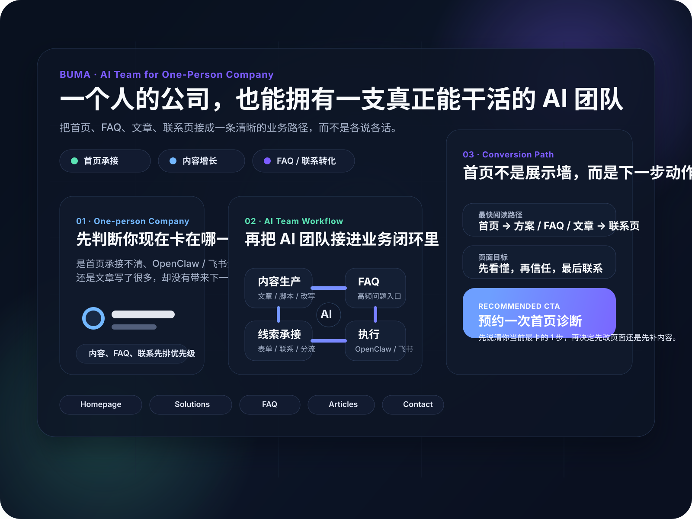

BUMA · AI Team for One-Person Company
一个人的公司， 也可以有一支真正能干活的 AI 团队。
不是堆概念，也不是堆工具。BUMA 把官网承接、内容增长、客户跟进和 OpenClaw / 飞书执行链路接成一条能落地的业务路径。

先把 1 条业务链路跑通
首页、FAQ、文章、联系页，不再各说各话。
After You Reach Out
不是“留个联系方式就结束”，而是先让你知道接下来 72 小时会发生什么
参考 Stripe 的“专家更快帮你看到价值”与 Intercom 的“AI + 人工同屏交接”写法，把咨询后的承接过程提前讲清，降低第一次联系的心理成本。
Why BUMA
三件事决定这套官网能否转化
参考 Linear 的首页结构，把价值主张拆成 3 条可理解的“能力标签”，让访客 5 秒内知道你能解决什么。
以业务为先，不做“工具堆”
先把咨询承接、内容分流、客户跟进跑成闭环，再选要接的 AI 和系统。
人机协作链路可复制
把 OpenClaw + 飞书的接入顺序、权限和触发设计成可落地流程。
每一步都有“下一步”
首页、解决方案、FAQ、联系页全部相互指向，避免流量来了就断。
Reader Fit
先判断你现在是哪一类问题，再决定首页该把你送去哪里
先别急着把所有内容都看一遍。首页先帮你判断现在更该先做承接、接入，还是内容，让下一步更清楚。
What BUMA Does
把 AI 真正接进业务里
不讲概念，做可落地的内容增长、客户承接与执行流程。
内容生产
选题、脚本、长文、改写一次打通。
客户承接
FAQ、咨询、线索跟进更稳定。
流程提效
把重复动作做成可复用流程。
Start Paths
如果你准备现在开始，先从这 3 条最短路径里选 1 条
如果你准备现在开始，这里直接告诉你该先看什么、看完去哪，避免第一次进站就被信息淹没。
How It Works
首页先讲清 3 件事：你卡在哪、我怎么接、最后会得到什么
少讲抽象概念，直接讲你现在卡在哪、下一步做什么、能拿到什么结果。
A
先判断问题
先分清是“起步、承接、转化、学习”哪一类问题，再决定给哪条路径。
B
再给最短路径
给你对应文章、FAQ、联系入口和下一步动作，而不是只讲功能和概念。
C
最后看结果
你会拿到可执行清单、内容结构、咨询承接方式或首页改版建议。
First Conversation Outcome
第一次沟通，不是“聊完再说”，而是让你带着 3 个明确结果离开
参考 Stripe 的“更快实现价值”表达与 Intercom 的“AI + 人工在同一套系统里交接”逻辑，把首次沟通的产出提前写清。这样用户知道这不是一次空聊，而是一次能把下一步定下来的诊断。
01
你现在卡点的判断
先判断你卡在流量、承接、接入还是内容主线，不让第一次沟通变成从头讲一遍背景。
阶段判断
主阻塞点
先后顺序
02
接下来先改哪一页
直接告诉你更该先补首页、FAQ / Contact、解决方案页，还是先做一条高意图内容线，避免动作分散。
优先页面
统一 CTA
承接顺序
03
一份能继续推进的下一步
沟通结束后不是“之后再联系”，而是留下可继续执行的动作：看哪篇文章、补哪份材料、按什么节奏继续。
下一步动作
补充材料清单
72 小时节奏
Good Fit or Not
先说清楚适合谁、不适合谁，网站才更像在做筛选，而不是逮到谁都想聊
参考 Stripe 把服务边界写在价值表达附近、Notion 用 use case 帮用户快速判断的做法，把“该不该现在联系”提前说清。这样更像商业网站，也能减少低质量空聊。
适合现在就聊
你已经有明确业务目标，只差把页面、内容和咨询动作接顺
- 你有官网、私域或正在投放，但线索来了以后不知道先把人引到哪一页。
- 你知道自己要做内容、FAQ、解决方案或 Contact，但优先级一直排不清。
- 你希望第一次沟通后，直接拿到页面优先级、承接动作和下一步节奏。
暂时不建议直接聊
如果你还在非常早期的模糊阶段，先补材料再来，会更省时间
- 你还没想清楚卖什么、服务谁，也没有任何想先验证的页面或业务动作。
- 你现在只是想泛泛了解 AI 工具，没有打算把内容或咨询真正接进业务里。
- 你还没准备基础信息：当前网站、主要产品、目标客户或最近想成交的场景。
如果你属于右边这一类：
先去看文章中心里的高意图内容，或先整理一次首次沟通材料，再回来约诊断，会比现在直接聊更有效。
Solutions
场景化方案，一眼知道能做什么
更少解释，直接给你能落地的方案组合。
一人公司官网与内容增长
- 官网主线表达与承接
- 文章专题与 FAQ 结构
- 多平台内容生产与更新
OpenClaw 落地与飞书协同
- OpenClaw 部署与基础配置
- 飞书消息接入与分工协同
- Agent 职责与工作流设计
Learn
想学习的人，直接从这些入口进
如果你想先学习，再决定怎么落地，可以从这几个入口开始。
OpenClaw 怎么学：7 天入门路线
先跑通，再接进一人公司业务，学习顺序更清楚。
一人公司如何用内容做客户承接与转化
把内容、线索和下一步动作接起来，避免只发不转化。
一人公司的 AI 团队实战流程
围绕内容、客户与执行，把一个人也能跑的流程讲清楚。
Proof Signals
不是只讲“能做”，而是把路径、入口和动作都摆出来
这一块专门补给第一次进站的人：先看你能拿到什么，再决定是看文章、看 FAQ，还是直接咨询。
01
先给路径
首页先告诉你当前属于起步、承接还是转化问题，而不是一上来堆很多功能名词。
02
再给入口
文章中心、FAQ、解决方案页和联系页都已经串起来，方便你顺着下一步继续走。
03
最后给动作
不是停在“看完了”，而是引导你进入咨询、排查、学习或页面改造的下一步动作。
Case Snapshot
先看 3 个可直接复用的承接案例
把首页、表单、报价的高频承接动作先拆给你，减少试错成本。
你会拿到
首页文案如何让咨询更愿意点
拆开 Hero、价值标签、下一步动作的写法与结构。
Hero 主标题骨架
CTA 顺序
价值标签写法
查看首页改版案例
你会拿到
咨询表单如何让需求更清楚
从字段顺序、提问方式、下一步承接做减法。
字段优先级
问题顺序
提交后承接
查看表单优化案例
你会拿到
咨询提交后成功页如何把热度继续接住
把“提交成功”后的确认、时效、材料清单与唯一 CTA 写清，不让客户停在一句“谢谢”。
成功页骨架
响应时效写法
唯一 CTA
查看成功页案例
Articles
精选文章与专题
精选短列表，避免堆满技术口吻。
OpenClaw 飞书咨询承接怎么接
把官网咨询接进飞书，再接成“分流 + 下一步动作”的最小链路。
一人公司客户评价页怎么写
把客户评价从“截图堆叠”改成“信任证明 + 咨询入口”。
官网咨询表单怎么设计
先问清需求，再决定 FAQ、报价和下一步动作。
咨询提交后成功页怎么写
把 Thank You Page 从礼貌页改成继续沟通、筛客与下一步承接入口。
OpenClaw 飞书接入清单
应用创建、权限配置、事件订阅与配对顺序。
进入文章中心
查看全部文章与专题入口。
FAQ Entry
常见阻塞点，不要靠猜，直接走对应入口
把高频问题单独留一个入口，能减少用户在首页和文章中心来回跳，承接会更稳。
问
飞书为什么接不进来
适合先排查应用、权限、事件订阅、WebSocket 和群聊触发范围。
去 FAQ 看排查入口页
官网有流量但接不住
适合先补首页承接、解决方案页、联系页和咨询表单路径。
先看承接方案文
想持续写内容又不想发散
适合先看文章中心，再按阶段和主题选最短学习路径。
进入文章中心Home FAQ
首页先把 3 个高频问题讲清，避免用户看完还不知道下一步
先把最常见的 3 个问题讲清楚，让第一次进站的人知道该继续看文章、FAQ，还是直接联系。
一个人的公司，应该先做首页改版还是先补 SEO 内容？
如果你已经有流量、有人点进站点，但用户到了首页后不知道下一步该做什么，先补首页、解决方案页、FAQ 和联系页的承接结构更划算。反过来，如果你目前最大问题是没人搜到、没人进站，再优先补高意图文章、FAQ 与站内内链。
OpenClaw 和飞书接入，首页用户最常卡在哪一步？
多数人不是卡在工具本身，而是卡在顺序：应用权限没开全、事件订阅没配对、群聊触发范围没判断、排查入口又过于分散。先跑通最小链路，再补页面承接和内容，比一开始同时铺很多模块更稳。
如果我想做 AI 内容增长，首页下一步应该去哪里？
建议先进入文章中心，看主线文章与主题分组，再根据你当前阶段回到 FAQ、解决方案页或联系页。首页负责先判断你是谁，文章中心负责让你更快找到“该先看哪一篇、看完后去哪一页”。
Start Now
要的不是再听一遍概念，而是先把 1 个优先动作定下来
如果你准备联系，建议直接带上当前站点链接、报错截图或你最卡的那 1 步。我会先帮你判断更该先做页面承接、消息接入，还是内容主线。
优先说清最卡的 1 步
带上链接 / 截图 / 报错更快
先收敛，再扩整站